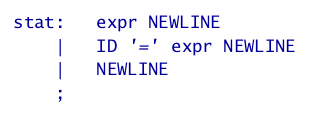
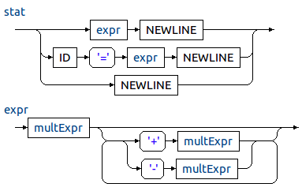
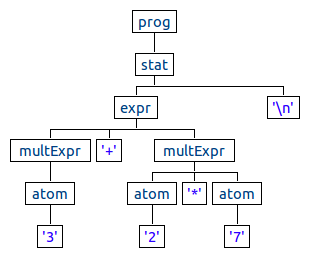
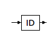
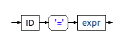
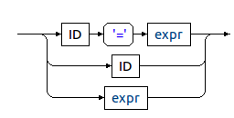
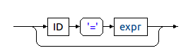
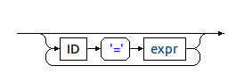

DSLs and Template Engines
Design and Implementation of Handlebars.java
Agenda:
- Domain-Specific Languages (DSLs)
- Introduction to ANTLRv4
- {{ Mustache }}: a logic-less template engine
- Handlebars.java: A modern template engine
Domain-Specific Languages (DSLs)


Implementing DSLs
Backus Naur Form (BNF)
 

Abstract Sytanx Tree (AST)
Introduction to ANTLRv4
- powerful parser generator for reading, processing, executing, or translating structured text or binary files.
- the result of 25 years of experience
- awesome! and new parsing technique: Adaptive LL(*) or ALL(*)
- simplified expressions: precedence, left recursion and associativity
- easy to write template engines through lexer modes
- created by Terence Parr
Commons Language Patterns with ANTLRv4
1. Match one rule element.
2. Sequence Pattern.
3. Choice Pattern.
4. Optional Pattern.
5. Zero or more Pattern.
6. One or more Pattern.
Part II
{{ Mustache }}: a logic-less template engine
- simple and easy to use
- no if statements, else clauses or for loops, just tags
- contextual and stack-based
- there are two types of tags: {{variables}} and {{#sections}}...{{/sections}}
- available in Ruby, JavaScript, Python, .NET, Java and more
Part III
Handlebars.java: A modern template engine
- a port of handlebars.js
- extremely simple to use and yet powerful!
- thread-safe
- good quality of code with almost 800 unit tests
- good quality of documentation, including API, blogs and code examples
- specially created for the modern web, highly integrated with JavaScript
- extensible and modular (JSON, SpringMVC, Markdown, Maven and more)
Getting started with Handlebars.java
// 1. Creates a new instance of Handlebars
Handlebars handlebars = new Handlebars();
// 2. Compile a template
Template template = handlebars.compileInline("Hello {{this}}!");
// 3. Apply the template
System.out.println(template.apply("Handlebars.java"));
// print: Hello Handlebars.java!
Helpers
{{name context? [argument]* [hash]*}} or
{{#name context? [argument]* [hash]*}}
...
{{/name}}
Built-in helpers
- with
- each
- if
- unless
Registering helpers
Using the helper interface
<-- template: -->
{{#blog this}}
<h1>{{title}}</h1>
<p>{{descrition}}</p>
{{/blog}}
// helper:
handlebars.registerHelper("blog", new Helper<Blog>() {
public CharSequence apply(Blog blog, Options options) {
return options.fn(blog);
}
});
Registering helpers
Using a helper source
// 1. All my helpers are here:
public class HelperSource {
public String blog(Blog blog, Options options) {
return options.fn(blog);
}
public static String now() {
return new Date().toString();
}
public String render(Blog context, String param0, int param1,
boolean param2, Options options) {
return ...
}
}
// 2. registering all the helpers at once:
handlebars.registerHelpers(new HelperSource());
Registering helpers
Writing helpers in JavaScript
// 1. helpers.js:
Handlebars.registerHelper('blog', function (blog, options) {
return options.fn(blog);
});
Handlebars.registerHelper('now', function () {
return new Date();
});
Handlebars.registerHelper('render', function (context, param0, param1, param2, options) {
return ...;
});
// 2. registering all the helpers at once:
handlebars.registerHelpers(new File("helpers.js"));
That's right! you can reuse your helpers in Java and JavaScript, cool isn't?
Helpers parameters & hashes
// Parameteres:
// from a helper interface:
{{blog this "string" true 678}}
...
public CharSequence blog(Blog blog, Options options) {
String str = options.param(0);
boolean bool = options.param(1);
int num = options.param(2);
}
// from a helper source:
public CharSequence blog(Blog blog, String str, boolean bool, int num) {
}
// Hash:
{{blog this s="string" b=true n=678}}
...
public CharSequence blog(Blog blog, Options options) {
String str = options.hash("s");
boolean bool = options.get("b");
int num = options.get("n");
}
When Handlebars.js met Handlebars.java
// 1. user.hbs
Hello {{this}}!
// 2. precompile:
{{precompile "user"}}
// 3. precompile output:
(function() {
var template = Handlebars.template, templates = Handlebars.templates = Handlebars.templates || {};
templates['user.hbs'] = template(function (Handlebars,depth0,helpers,partials,data) {
helpers = helpers || Handlebars.helpers;
var buffer = "", functionType="function", escapeExpression=this.escapeExpression;
buffer += "Hi ";
depth0 = typeof depth0 === functionType ? depth0() : depth0;
buffer += escapeExpression(depth0) + "!";
return buffer;});
})();
// 4. later with handlebars.js:
var template = Handlebars.templates['user.hbs'];
var output = template(model);
Where is my {{ Mustache }} template?
// Where is the hello file?
Template template = handlebars.compile("hello");
Loading templates
Where is my {{ Mustache }} template?
Templates prefix & suffix
- prefix: gets prepended to template names before being resolved.
- suffix: gets appended to template names before being resolved. Default is: .hbs
// resolved as: '/hello.hbs'
Template template = new Handlebars().compile("hello");
// resolved as: '/hello.html'
Template template = new Handlebars(new ClassPathTemplateLoader("/", ".html")).compile("hello");
// resolved as: '/templates/hello.html'
Template template = new Handlebars(new ClassPathTemplateLoader("/templates", ".html")).compile("hello");
Reusing {{ Mustache }} templates
partials:
<-- /header.hbs: -->
<h1>{{title}}</h1>
<-- /footer.hbs: -->
<span>Powered by Handlebars.java</span>
<-- /home.hbs: -->
{{> header}}
<p>Home page</p>
{{> footer}}
Reusing {{ Mustache }} templates
inheritance:
<-- /base.hbs: -->
{{#block "header" }}
<h1>Title</h1>
{{/block}}
{{#block "content" }}{{/block}}
{{#block "footer" }}
<span>Powered by Handlebars.java</span>
{{/block}}
<-- /home.hbs: -->
{{#partial "content" }}
<p>Home page</p>
{{/partial}}
{{> base}}
The context stack
Mustache is a contextual and stack based template engine
The resolution algorithm looks something like:
while (context != null && context.get("value") == null) {
context = context.parent;
}
- A value will be resolved in the current context
- If the value isn't here, the parent context need to resolved the value
- If null is returned, nothing will be rendered
Extending the context stack
User loggedIn = ...;
Object model = ...;
// Instantiate a context and combine the loggedIn user
Context context = Context
.newBuilder(model)
.combine("user", loggedIn)
.build();
template.apply(context);
Value resolvers
Using values resolvers
Context context = Context
.newBuilder(model)
.resolver(
// 1. resolve values from java.util.Map
MapValueResolver.INSTANCE,
// 2. resolve values from getters
JavaBeanValueResolver.INSTANCE
)
.build();
template.apply(context);
Type-Safe templates
// 1. create a type safe template
public interface UserTemplate extends TypeSafeTemplate<User> {
public UserTemplate setAge(int age);
public UserTemplate setRole(String role);
}
// 2. compliling and creating a type safe template
UserTemplate userTmpl = hbs.compileInline("{{name}} is {{age}} years old!")
.as(UserTemplate.class);
userTmpl.setAge(32);
userTmpl.apply(new User("Edgar"));
Handlebars.java server
fast prototyping of web sites, specially created for web designers and developers
java -jar handlebars-proto.jar -dir templates